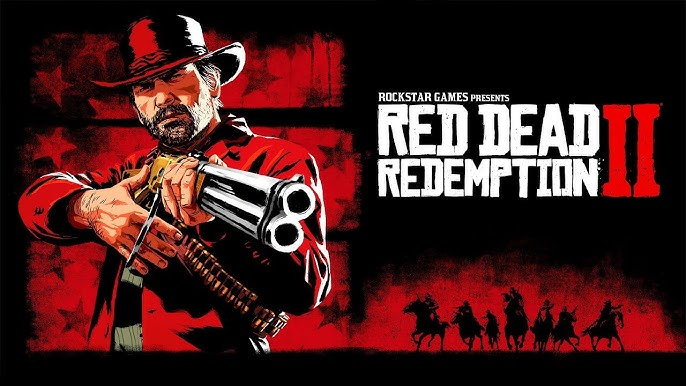

🆠Top 10

The Legend of Zelda: Ocarina of Time.
Nintendo 64 | 1998 | â 9.9

Tony Hawk's Pro Skater 2.
PlayStation | 2000 | â 9.8

Grand Theft Auto IV.
Multiplataforma | 2008 | â 9.8

SoulCalibur.
Dreamcast | 1999 | â 9.8

Super Mario Galaxy.
Nintendo Wii | 2007 | â 9.7

Super Mario Galaxy 2.
Nintendo Wii | 2010 | â 9.7

Red Dead Redemption 2.
Multiplataforma | 2018 | â 9.7

Zelda: Breath of the Wild.
Switch | 2017 | â 9.7

The Witcher 3 Wild Hunt.
Multiplataforma | 2015 | â 9.6
Elden Ring.
Multiplataforma | 2022 | â 9.6